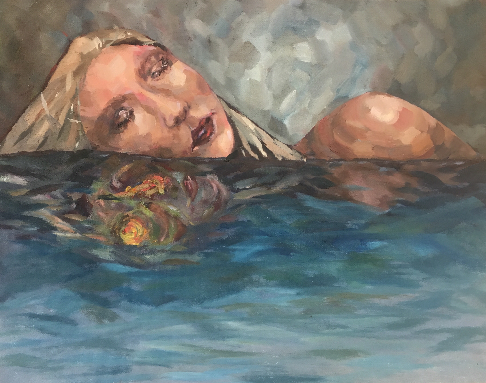
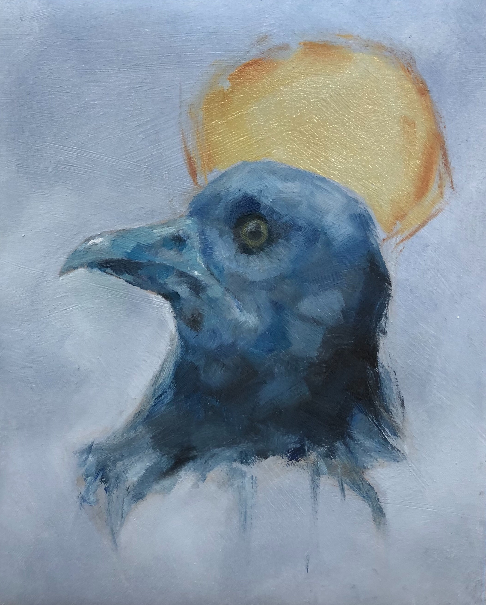

I started my sustained investigation in 2016 with something I was familiar with: oil paint. I chose to leave the paint strokes unblended, showing the individual marks made. I chose a warmer color scheme and a fiery, back-lit effect.

I painted this piece over an existing painting I didn't particularly like, and that proved to be a particularly unique challenge; I had to work around the textures and layers of paint underneath. With this one, I continued the theme of my previous paintings — solemn, individual women. How does femininity affect how we perceive the world? I used a mix of harsh lines and soft blending against the black background to make this portrait stand out, as well as leave some of the burnt sienna of the underpainting show.
In this oil piece, I wanted to explore an individual's sense of self, and the duality of self-imaging. I was influenced by my own experiences growing up, and acknowledging the fact that my own self-image was often starkly different to others around me. I chose to paint abstractly, leaving wide strokes of color.
This is another oil painting I made; it's a bit of an off-shoot of the other two. I left the color scheme behind, but the intense human portraiture remains. Looking back, though, I shouldn't have made the background that blue/red mix. It contrasts with the colors of the focal point, which are muted skin tones.
This piece was largely influenced by my own experiences over the course of last year, through which I tried to express a lot of the conflict that I went through. I chose to use a moody, overcast color palette with the exception of the eyes, where I used a palette knife for the first time to create a chaotic, contrasting look. I used my own face as a loose reference.
This painting was meant to go along with my previous oil painting. I used the same color palette and overarching theme, but I stopped before I added any of the orange/green paint with a palette knife, even though I had planned on doing so originally. I wanted to create something surreal again, and with this piece, I wanted to create something a little human yet off-kilter. I ended up unhappy with this piece, as the skin looked incredibly splotchy and the background was too empty. Even so, I stopped here to make sure I had enough pieces to submit for my portfolio. I came back in the summer of quarantine to finally update this piece, as it kept bothering me. I repainted both the background as well as the skin, and gave the figure hair. I deepened shadows and added contrast to make this feel much more finished.
For this oil piece, which I painted for a charity, I had to think about creating something that people would like as decoration. It was a fun exploration into something I felt would be more decorative and kitschy. I like the monochrome blue color scheme and the muted yellow/orange halo in the back, and I tried to make it a sketchier painterly piece.

I took the opportunity to paint on something a little unique, as my family was throwing away an old desk. This was painted on one of the left-over panels. I played around with symmetry, as well as my idea of the duality of personality. The bright colors were especially fun to paint.